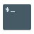

Layout
Windows-like
Windows List
Touch
GNOME Shell
Home
Trash
User
All Apps
No results found
Monday
21 July 2026
July 2026
S
M
T
W
T
F
S
Notifications
No Notifications
100 %
Wired
Bluetooth
Balanced
Night Light
Dark Mode
Airplane Mode
Power Mode
Power Saver
Reduced performance and screen brightness
Balanced
Standard performance and battery life
Performance
High performance and power usage
Power Off
Suspend
Restart…
Power Off…
Log Out…
Power Off
Do you want to power off?
Cancel
Power Off
Home
Name
Size
Modified

user@zorin: ~
user@zorin
:
~
$
uname -a
Linux zorin 6.8.0-generic #1 SMP PREEMPT_DYNAMIC x86_64 GNU/Linux
user@zorin
:
~
$
lsb_release -d
Description: Zorin OS 18
user@zorin
:
~
$
▋
Activities
Tue 19:00